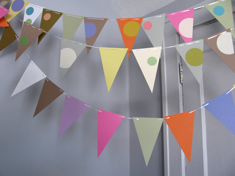
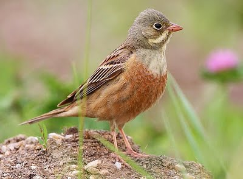

Friday, March the 9th, 2012
back to: title, date or indexes
Apropos of nothing in particular, I thought I would share with you an inexplicable ornithological mixup which occurred some twenty years ago. I was constructing a set of twenty-six alphabetical drawings, and decided that O would stand for Ortolan. How I arrived at this word without knowing what it meant I cannot recall. Anyway, I looked it up and learned that Ortolan was a synonym for Bunting. I then drew a picture of a string of triangular flags such as one might find at an outdoor gala. Only after the picture had been published, along with its twenty-five compadres, in the big fat paperback Small Press Yearbook (date forgotten, but circa 1990) did I discover that the Bunting in question was not flags but a bird. As readers know, since the last century my ornithological erudition has progressed by leaps and bounds and little birdy hops à la the robin. I cannot find a copy of my drawing, so these snaps, from here and here, must suffice.

Bunting, but not Ortolan

Both Bunting and Ortolan